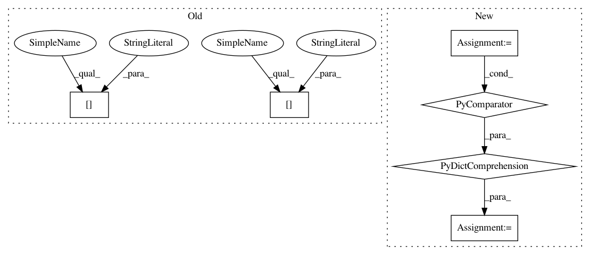

a55f9be217b2320cec7c7dc44a8245496f851af5,softlearning/algorithms/sql.py,SQL,_get_feed_dict,#SQL#Any#Any#,397
Before Change
feed_dict = {
self._observations_ph: batch["observations"],
self._actions_ph: batch["actions"],
self._next_observations_ph: batch["next_observations"],
self._rewards_ph: batch["rewards"],
self._terminals_ph: batch["terminals"],
}
if iteration is not None:
After Change
def _get_feed_dict(self, iteration, batch):
Construct a TensorFlow feed dictionary from a sample batch.
feed_dict = {
self._placeholders[key]: batch[key]
for key in self._placeholders.keys()
if key in batch
}
if iteration is not None:
feed_dict[self._placeholders["iteration"]] = iteration
In pattern: SUPERPATTERN
Frequency: 3
Non-data size: 6
Instances
Project Name: rail-berkeley/softlearning
Commit Name: a55f9be217b2320cec7c7dc44a8245496f851af5
Time: 2019-06-01
Author: hartikainen@berkeley.edu
File Name: softlearning/algorithms/sql.py
Class Name: SQL
Method Name: _get_feed_dict
Project Name: rail-berkeley/softlearning
Commit Name: a55f9be217b2320cec7c7dc44a8245496f851af5
Time: 2019-06-01
Author: hartikainen@berkeley.edu
File Name: softlearning/algorithms/sac.py
Class Name: SAC
Method Name: _get_feed_dict
Project Name: rail-berkeley/softlearning
Commit Name: a55f9be217b2320cec7c7dc44a8245496f851af5
Time: 2019-06-01
Author: hartikainen@berkeley.edu
File Name: softlearning/algorithms/sql.py
Class Name: SQL
Method Name: _get_feed_dict
Project Name: rail-berkeley/softlearning
Commit Name: 6d6f8612a0b12636269e3837c6bb27d2ff94e9d3
Time: 2019-01-10
Author: henryee333@gmail.com
File Name: softlearning/samplers/remote_sampler.py
Class Name: RemoteSampler
Method Name: __getstate__